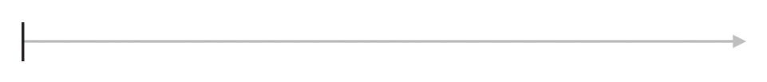
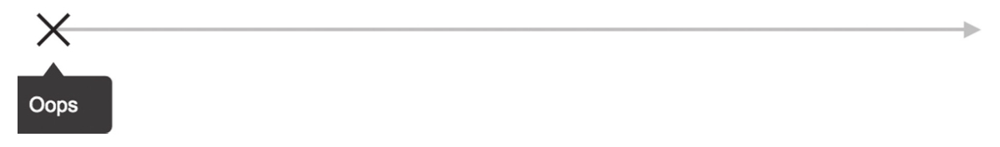
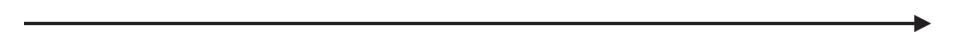

empty、never和throw是比较有意思的三个操作符，它们产生的Observable对象十分简单，简单得看起来似乎没有什么价值，不过，当需要默认立刻完结、立刻出错或者永不完结的数据流对象时，这三个操作符可以直接使用。
1.empty
empty就是产生一个直接完结的Observable对象，没有参数，不产生任何数据，直接完结，下面是示例代码：
import 'rxjs/add/observable/empty'; const source$ = Observable.empty();
对应的弹珠图如图4-6所示。

图4-6 empty的弹珠图
2.throw
throw产生的Observable对象也是什么都不做，直接出错，抛出的错误就是throw的参数，下面是使用throw的示例代码：
import 'rxjs/add/observable/throw';
const source$ = Observable.throw(new Error('Oops'));
上面的代码中，source$代表的Observable对象不会产生任何数据，一开始就会直接给下游传递一个Error对象。
对应的弹珠图如图4-7所示。

图4-7 throw的弹珠图
值得一提的是，throw是JavaScript的关键字，如果直接导入独立的throw函数，也就是用打补丁的方式把throw挂在Observable类上，那就会引起冲突，所以，如果不用打补丁的方式，那么导入的不是throw，而是_throw，下面是示例代码：
import {_throw} from 'rxjs/observable/throw';
const source$ = _throw(new Error('Oops'));
3.never
好歹empty和throw产生的对象还做了一个动作，而never产生的Observable对象就真的是什么都不做，既不吐出数据，也不完结，也不产生错误，就这样待着，一直到永远。示例代码如下：
import 'rxjs/add/observable/never'; const source$ = Observable.never();
从图4-8可以看到，never的弹珠图上什么动作都没有。

图4-8 never的弹珠图
注意
never、empty和throw单独使用没有意义，但是，在组合Observable对象时，如果需要这些特殊的Observable对象，这三个操作符可以直接使用，例如，根据条件是否产生出错的数据流如下：
$source.concat(shouldEndWell? Observable.empty() : Observable.throw(new Error()))
后续章节会介绍concat的用法。